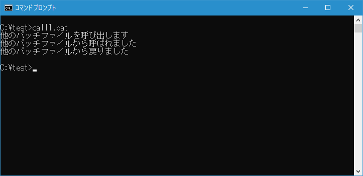
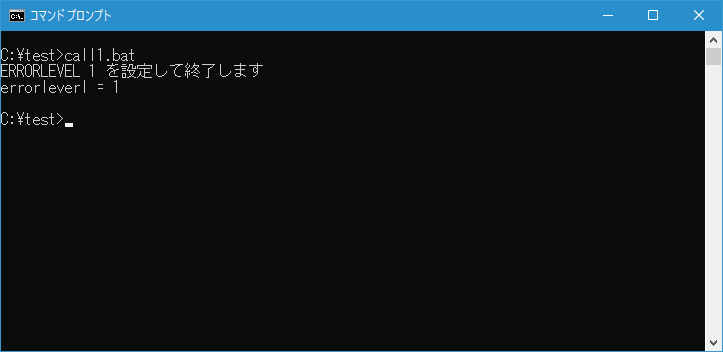
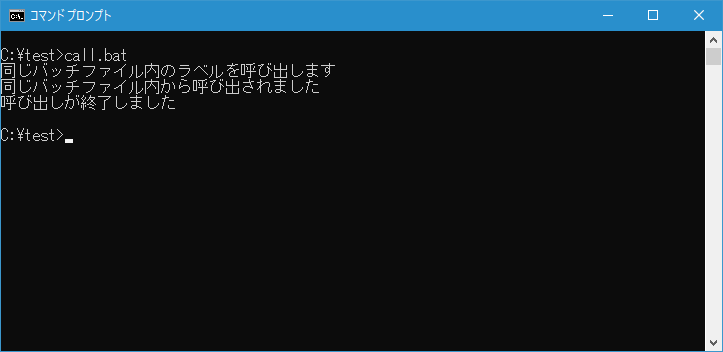
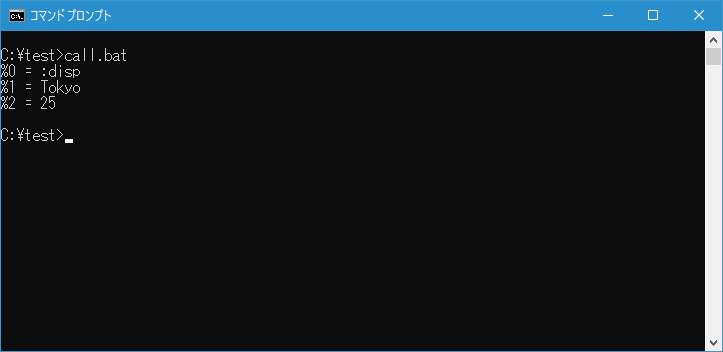

バッチファイルから別のバッチファイルを呼び出す(CALL)
CALL コマンドを使用するとバッチファイルの中から別のバッチファイルを呼び出したり、同じバッチファイル内の指定したラベル以降の処理を呼び出したりすることができます。ここでは CALL コマンドを使いバッチファイルから別のバッチファイルを呼び出す方法について解説します。
目次
CALLコマンドの使い方
CALL コマンドを使って他のバッチファイルを呼び出す場合には次の書式を使います。
CALL [ドライブ:][パス]ファイル名 [バッチパラメーター]
呼び出すバッチファイルのファイル名を指定します。バッチファイルを呼び出すときには引数を指定して呼び出すこともできます。
また CALL コマンドを使って同じバッチファイル内の指定したラベル以降の処理を呼び出す場合には次の書式を使います。
CALL :ラベル [引数]
呼び出すラベル名を指定します。引数を指定して呼び出すこともできます。
それぞれ確認していきます。
別のバッチファイルを呼び出す
別のバッチファイルを呼び出す方法です。例えばバッチファイル call2.bat を呼び出す場合には次のように記述します。
call call2.bat
CALL コマンドが実行された時の処理の流れは次のようになります。呼び出し元のバッチファイルで CALL コマンドが実行されると、呼び出されたバッチファイルが実行されます。呼び出されたバッチファイルの末尾まで実行されるか EXIT コマンドが実行されると元のバッチファイルの CALL コマンドの次の行から実行されます。
テストを行うために次のような簡単なバッチファイル call1.bat および call2.bat を c:\test に作成しました。
@echo off
echo 他のバッチファイルを呼び出します
call call2.bat
echo 他のバッチファイルから戻りました
@echo off
echo 他のバッチファイルから呼ばれました
exit /b
バッチファイル call1.bat を実行すると途中でバッチファイル call2.bat を呼び出します。バッチファイル call2.bat が実行されて最後に EXIT コマンド実行されると呼び出し元の CALL コマンドの次の行から実行されます。

CALL コマンドを使うことで他のバッチファイルを呼び出した後、CALL コマンドの次の行から処理を再開することができます。
引数をつけて別のバッチファイルを呼び出す
CALL コマンドでバッチファイルを呼び出すときに引数をつけて呼び出すことができます。
CALL ファイル名 引数1 引数2 ...
呼び出されたバッチファイルでは、コマンドラインから引数付きでバッチファイルを実行した時の同じように %1 ~ %9 という特別な記述を使って取り出して使うことができます。(詳しくは「バッチファイル実行時に引数を渡す」を参照されてください)。
テストを行うために次のような簡単なバッチファイル call1.bat および call2.bat を c:\test に作成しました。
@echo off
set para1=Tokyo
set para2=25
call call2.bat %para1% %para2%
@echo off
echo %%0 = %0
echo %%1 = %1
echo %%2 = %2
exit /b
バッチファイル call1.bat を実行すると途中でバッチファイル call2.bat を2つの引数を付けて呼び出します。バッチファイル call2.bat が実行され、引数で渡された値を取得して画面に表示します。
環境変数ERRORLEVELを使って呼び出したバッチファイルから戻り値を受け取る
CALL コマンドでは呼び出したバッチファイルから戻り値を受け取ることはできませんが、呼び出したバッチファイルの最後で EXIT コマンドを実行することで環境変数 ERRORLEVEL に値を設定することができます。
EXIT /b 終了コード
※ EXIT コマンドの使い方については「コマンドプロンプトまたはバッチファイルを終了(EXIT)」を参照されてください。
例えば ERRORLEVEL に 1 を設定して呼び出されたバッチファイルを終了するには次のように実行します。
exit /b 1
バッチファイルを呼び出した側は CALL コマンドを実行した次の行以降で環境変数 %ERRORLEVEL% を参照することで呼び出されたバッチファイル側で設定した値を確認することができます。
テストを行うために次のような簡単なバッチファイル call1.bat および call2.bat を c:\test に作成しました。
@echo off
call call2.bat
echo errorleverl = %errorlevel%
@echo off
echo ERRORLEVEL 1 を設定して終了します
exit /b 1
バッチファイル call1.bat を実行すると途中でバッチファイル call2.bat を呼び出します。バッチファイル call2.bat では終了時に EXIT コマンドを終了コード付きで実行します。CALL コマンドの次の行で環境変数 ERRORLEVEL の値を参照して画面に表示します。

このように CALL コマンドでは戻り値を受け取ることはできませんが、環境変数 ERRORLEVEL を利用することで、バッチの呼び出したどのように終了したのかなど簡単な情報を知ることができます。
同じバッチファイル内の指定ラベルをサブルーチンのように呼び出す
CALL コマンドでは別のバッチファイルを呼び出すだけでなく、同じバッチファイル内の指定ラベルを呼び出すことができます。例えばラベル disp を呼び出すには次のように記述します。
CALL :disp
CALL コマンドを実行してラベルを呼び出すと、ラベルの次の行からコマンドが実行されます。バッチファイルの末尾まで実行するか EXIT コマンドが実行されると CALL コマンドの次の行から実行されます。
テストを行うために次のような簡単なバッチファイル call.bat を c:\test に作成しました。
@echo off
echo 同じバッチファイル内のラベルを呼び出します
call :disp
echo 呼び出しが終了しました
goto :EOF
:disp
echo 同じバッチファイル内から呼び出されました
exit /b
バッチファイルを実行すると同じバッチファイル内のラベルを呼び出します。ラベルの次の行からコマンドが実行され最後に EXIT コマンドが実行されると CALL コマンドの次の行から実行が行われます。

-- --
別のバッチファイルを呼び出した時と同じように同じバッチファイル内のラベルを呼び出すときに引数を指定して呼び出すことができます。使い方は他のバッチファイルを呼び出すときと同じです。
テストを行うために次のような簡単なバッチファイル call.bat を c:\test に作成しました。
@echo off
set para1=Tokyo
set para2=25
call :disp %para1% %para2%
goto :EOF
:disp
echo %%0 = %0
echo %%1 = %1
echo %%2 = %2
exit /b
バッチファイルを実行すると同じバッチファイル内のラベルを引数付きで呼び出します。ラベルの次の行からコマンドが実行され引数で渡された値を取得して画面に表示します。

なお %0 には通常実行しているバッチファイルの名前が表示されますが、CALL コマンドでラベルを呼び出した時にはラベル名が格納されます。
-- --
CALL コマンドを使って別のバッチファイルを呼び出したり同じバッチファイル内の指定したラベルをサブルーチンのように呼び出したりする方法について解説しました。
( Written by Tatsuo Ikura )

著者 / TATSUO IKURA
初心者～中級者の方を対象としたプログラミング方法や開発環境の構築の解説を行うサイトの運営を行っています。